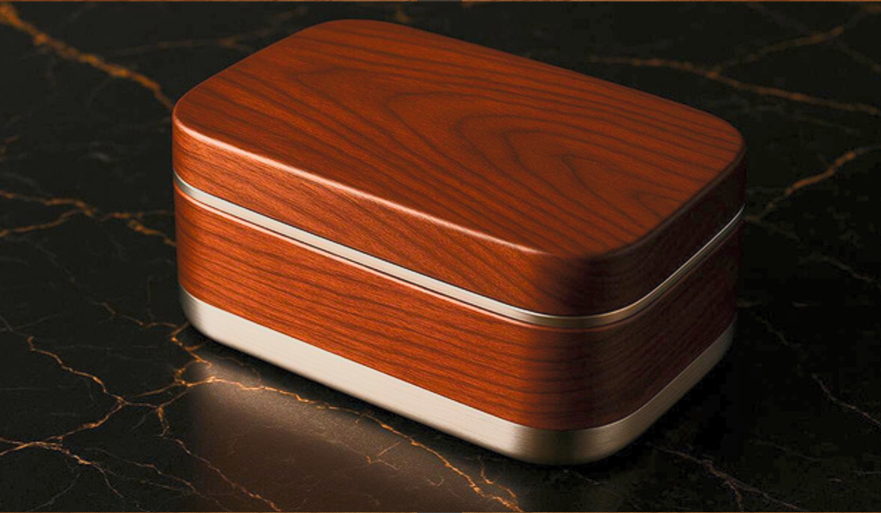

Lunch Box Design Project
Materials & Manufacturing Design Coursework • Queen's University Belfast • Scored 82% Distinction
Project Goal & Design Requirements
Our objective was to design a luxury, high-performance lunch box targeted at discerning gourmet consumers (professionals aged 30–55 with high disposable income and culinary enthusiasts). The product needed to maintain 3–4 hours of thermal performance, present an elegant tactile aesthetic, guarantee food-safe durability, and establish a viable commercial business model justifying a premium £89.99 retail price point.

Render showcasing the seamless fusion of organic walnut wood veneer on the lid and precision-machined 316 austenitic stainless steel double-walled vacuum body.
Target User & Product Requirements
- Target Demographic: Working professionals aged 30–55 and culinary enthusiasts who appreciate fine dining, prioritize quality and presentation, and reject cheap plastic containers that fail to hold temperature.
- Essential Features: 3–4 hour thermal insulation, premium tactile feel, refined seamless finish, BPA-free food-safe contact surfaces, robust daily durability, and leak-proof hermetic silicone seal.
- Desirable Features: Removable internal food compartments, dishwasher-safe chassis, solid reassuring weight (~395g), condensation barrier, and stackable modular form.
- My Leadership Role: Led all design decisions, material property benchmarking, weighted decision matrix synthesis, and full-lifecycle carbon/energy accounting, while co-authoring the business outlook and unit cost model.
Material Selection & Microstructure Performance
We conducted deep material research across metallic and organic candidates, evaluating thermal conductivity, tensile strength, corrosion resistance, recyclability, and food safety standards (FDA / ASTM A240 / ISO 10993).
Engineering Materials Benchmarking
| Property | 316 Stainless Steel (Selected Body) | Anodised Aluminium 6061 | Walnut Wood Veneer (Selected Lid) | Food-Grade Silicone (Seal) |
|---|---|---|---|---|
| Density (g/cm³) | 7.9 (Reassuring luxury heft) | 2.7 (Lightweight) | 0.6–0.7 (Low-density natural pores) | 1.1–1.3 |
| Tensile Strength (MPa) | 515 (High dent & drop resistance) | 310 | 35–45 (Anisotropic, fiber direction) | 7–10 |
| Young's Modulus (GPa) | 193 | 69 | 10–12 | 0.001–0.05 |
| Thermal Conductivity (W/m·K) | 16.3 (Low → Ideal for vacuum wall) | 167 (High heat loss) | 0.15–0.20 (Natural organic insulator) | 0.15–0.20 |
| Corrosion Resistance | Excellent (Cr₂O₃ + Mo passive layer) | Very Good (Al₂O₃ anodized layer) | Requires food-safe PU barrier | Excellent |
| Food Safety Standards | FDA Approved, ASTM A240, ISO 10993 | FDA Approved | Food-Safe PVA & PU sealed | FDA BPA-Free Compliant |
| Recyclability / End-of-Life | 100% Infinite Recycling (No loss) | 100% Recyclable | 100% Biodegradable & Compostable | Limited Specialty Recycling |
| Microstructure | Austenitic FCC (Face-Centered Cubic) | FCC + Al₂O₃ anodic layer | Cellular cellulose with tannins | Cross-linked siloxane chains |
To validate our hybrid material architecture, we evaluated tensile stress-strain curves for both constituent materials:
- 316 Stainless Steel (Ductile Mechanics): Exhibits an extensive plastic deformation plateau up to 515 MPa ultimate tensile strength. If accidentally dropped onto concrete from 1.5 m, the steel absorbs kinetic energy through microscopic plastic strain (denting rather than catastrophic shattering), protecting internal food seals.
- Walnut Wood Veneer (Brittle Mechanics): Exhibits linear-elastic behavior terminating in sudden brittle fracture at ~40 MPa. Walnut cannot carry structural load under drop shock.
- Architectural Solution: The 316 stainless steel chassis takes 100% of the mechanical, thermal, and hydrostatic load, allowing the cold-pressed walnut veneer to function purely as a premium, low-stress aesthetic and insulating accent without structural risk.
Weighted Decision Matrix
To eliminate subjective bias, I constructed a comprehensive weighted Pugh decision matrix scoring competing material systems on a 1–10 scale across 7 critical criteria. Weights were assigned reflecting gourmet consumer priorities: thermal retention (25%) and material tactile feel (20%) dominated over raw production cost (5%).
Materials & Configuration Decision Matrix
| Criteria | Weight | Option 1: 316 SS + Walnut (Selected) | Option 2: Aluminium + Bamboo | Option 3: Walnut + Silicone |
|---|---|---|---|---|
| 1. Material Feel & Appearance | 20% | 10 / 10 → 2.00 | 8 / 10 → 1.60 | 7 / 10 → 1.40 |
| 2. Thermal & Condensation Performance | 25% | 10 / 10 → 2.50 | 6 / 10 → 1.50 | 3 / 10 → 0.75 |
| 3. Durability & Scratch Resistance | 15% | 9 / 10 → 1.35 | 7 / 10 → 1.05 | 5 / 10 → 0.75 |
| 4. Weight & Portability | 10% | 6 / 10 → 0.60 | 9 / 10 → 0.90 | 10 / 10 → 1.00 |
| 5. Food Safety & Ease of Cleaning | 15% | 10 / 10 → 1.50 | 9 / 10 → 1.35 | 7 / 10 → 1.05 |
| 6. Leak-Proof Hermetic Design | 10% | 10 / 10 → 1.00 | 8 / 10 → 0.80 | 9 / 10 → 0.90 |
| 7. Manufacturing Cost Efficiency | 5% | 5 / 10 → 0.25 | 8 / 10 → 0.40 | 7 / 10 → 0.35 |
| TOTAL WEIGHTED SCORE | 100% | 9.20 / 10.0 (Winner) | 7.60 / 10.0 | 6.20 / 10.0 |
Manufacturing Processes & Quality Engineering
We systematically evaluated six candidate manufacturing routes before finalizing 3-axis CNC milling for the monolithic body and cold press pneumatic lamination for the wood veneer lid.
Selected over sheet metal stamping and deep drawing. Machining from solid 316 SS billet on a Haas VF-2 mill produces seamless monolithic double-walls without visible weld seams, achieving Ra 0.4–0.8 μm mirror-finish polish and ±0.05 mm lid threading.
Selected over roller pressing and hot press lamination. Uses a 50-ton pneumatic veneer press at 100–150 PSI and 70°C with food-safe PVA adhesive, curing into compound 3D contours without scorching tannins or grain distortion.
Body receives brushed-satin perimeter exterior with electro-polished hygienic interior. Walnut lid receives 3 coats of food-safe water-based polyurethane sealer, providing UV resistance and water droplet beading.
Critical Tolerances & Empirical Material Testing
| Component / Feature | Precision Tolerance | Manufacturing Process | Engineering Justification |
|---|---|---|---|
| Threaded Lid Connection | ±0.05 mm | CNC Thread Milling | Hermetic leak-proof seal & smooth tactile engagement |
| Vacuum Wall Gap | ±0.02 mm | CNC Precision Boring | Ensures 3–4h thermal barrier without conductive bridge contact |
| Silicone Gasket Groove | ±0.08 mm | CNC End Milling | Governs exact 25% elastomeric compression for liquid containment |
| Veneer Lid Thickness | ±0.10 mm | Cold Press Platens | Flush alignment with steel perimeter rebate without lip overhang |
Tested Kˢʞ fracture toughness of 515 MPa. Verified drop test performance surviving 1.5 m free-fall onto concrete without cracking or structural rupture.
Thermal stress cycle from 95°C (hot fill) to 5°C produces 30 MPa thermal stress vs 240 MPa endurance limit (8:1 safety factor), ensuring 15–20 year operational lifespan (>11,000 cycles).
Carbon Footprint & Eco-Audit Lifecycle
I conducted a comprehensive cradle-to-grave embodied energy and carbon audit using Granta CES EduPack methodologies, demonstrating an extraordinarily rapid environmental payback against single-use disposables.
Embodied Energy Breakdown (55.0 MJ Total)
- 316 Stainless Steel Raw Material: 27.5 MJ (50.0% of total) — Energy required to smelt and refine austenitic alloy.
- CNC Machining Operations: 18.5 MJ (33.6%) — Electrical power consumption across Haas VF-2 roughing and finishing cycles.
- Walnut Wood Veneer: 3.0 MJ (5.5%) — Harvesting, kiln drying, and slicing.
- Cold Press Lamination: 1.5 MJ (2.7%) — Heated platens and pneumatic pressure.
- Surface Polishing & Coating: 4.5 MJ (8.2%) — Satin brush polishing and PU curing.
Lifecycle Carbon Footprint (4.0 kg CO₂e Total)
- Material Extraction Phase: 3.31 kg CO₂e (83%) — Dominated by stainless steel raw extraction (3.30 kg) with near-zero wood impact (0.01 kg).
- Manufacturing & Press Phase: 0.49 kg CO₂e (12%) — CNC machining grid electricity (0.42 kg) and press curing (0.07 kg).
- Regional Transport & Use Phase: 0.20 kg CO₂e (5%) — Regional 200 km distribution and low-water hand washing.
- End-of-Life Recycling Credit: −1.98 kg CO₂e — 90% industry steel recycling yields a net footprint of just 2.02 kg CO₂e.
Standard takeaway plastic containers emit ~0.40 kg CO₂e each. Our lunch box achieves full carbon break-even after just 10 uses. Over its 15-year operational service life (5,475 meals), each unit prevents 2,186 kg CO₂e from entering the atmosphere.
Business Outlook & Cost Analysis
We constructed a rigorous unit-cost commercial model demonstrating strong economic viability. At an annual volume of 2,000 units on a single CNC workcell, the product achieves a 67% gross margin and 33% net profit margin.
Manufacturing Cost Breakdown (£29.25 / Unit)
- 316 Stainless Steel Billet: £2.50
- Walnut Wood Veneer: £0.35
- CNC Machining (18 min @ £45/hr): £11.25
- Cold Press Lamination: £1.25
- Finishing, Deburring & Polishing: £2.80
- Silicone Gasket & Hardware: £1.50
- Assembly & Quality Inspection: £1.80
- Tooling Amortization (£160 / 200 parts): £1.20
- Premium Sustainable Packaging: £2.40
- Overheads, Utilities & Energy: £3.75
- Total Unit Cost: £29.25
Retail Commercial Model (£89.99 Retail Price)
- Suggested Retail Price (MSRP): £89.99
- Manufacturing Cost: −£29.25 (32.5%)
- Marketing & Digital Customer Acquisition: −£18.00 (20.0%)
- Retail Channel & Payment Markup: −£13.20 (14.7%)
- Net Profit Per Unit: £29.54 (32.8% Net Margin)
- Gross Margin: 67.5% (£60.74 gross profit)
- Annual Net Profit (2,000 units): £59,080 / year
- Break-Even Threshold: Only ~85 units to recoup initial tooling investments
- Investor Ask: £45,000 for 15% equity (funding inventory, tooling, and launch marketing)
Strategic Engineering Trade-Offs Managed
Great engineering is the art of deliberate, defensible compromises. As design lead, I managed three critical trade-offs between cost, weight, and user maintenance.
Trade-off: Chose CNC milling over sheet metal stamping, accepting 40% higher unit production cost and a low-volume ceiling (2,000 units/year).
Justification: The target gourmet market demands a seamless, mirror-polished monolithic feel impossible with stamped weld beads. The £11.25 machining cost is easily absorbed within our £89.99 retail price.
Trade-off: Accepted a 395g unit weight over an ultra-lightweight aluminium alternative (135g).
Justification: Gourmet consumers consistently equate solid heft with structural integrity and craftsmanship (“heft = quality”). Portability was preserved via a compact desktop footprint.
Trade-off: The walnut wood lid requires gentle hand-wash cleaning, while the stainless steel body is fully dishwasher-safe.
Justification: Applied 3 coats of food-safe water-based polyurethane to prevent moisture warping, offering artisanal aesthetic warmth that synthetic plastics cannot match.
Download Lunch Box Design Presentation
Access the original coursework presentation deck created for Queen's University Belfast, covering consumer requirements, materials science, stress-strain behavior, Pugh decision matrices, CNC tooling, eco-audits, and commercial financial modeling.